Portfolio · Philosophie EF
Die follgende seite soll all unsere gesammelten ergebnisse nochmal in reihenfollge mit den passenden beschriftungen
offenlegen.
Hier finden sie auch die Originale bearbeitung der Storys, bevor diese digitalisiert wurden.
Bedenken sie jedoch das einige Aufgaben erst während der Digitalisierung vollendet wurden.
Viel Spaß beim korrigieren und bewerten wünscht ihnen der Editor dieser Seite ૮₍ ´ ꒳ `₎ა
Für Kropotkin ist Anarchismus die Idee einer Gesellschaft ohne Herrschaft, in der Ordnung nicht durch Gesetze und Zwang, sondern durch freie Vereinbarungen zwischen autonomen Gruppen entsteht.
Diese Gruppen ordnen sich nach territorialen und beruflichen Gesichtspunkten und regeln Produktion, Austausch und die Befriedigung der vielfältigen menschlichen Bedürfnisse.
Freiwillige Vereinigungen, die bereits vieles abdecken, würden sich ausdehnen und nach und nach die staatlichen Funktionen ersetzen.
Zusammen bildeten sie ein dichtes Netzwerk von Organisationen unterschiedlicher Größen und Dauer, lokal bis international, zuständig für Produktion, Gesundheit, Bildung, Kommunikation, Verteidigung und kulturelle sowie wissenschaftliche Aktivitäten.
Harmonie ist kein starrer Zustand, sondern das Ergebnis ständiger Anpassung und Neuaustarierung der Kräfte, vergleichbar mit Vorgängen im organischen Leben.
Ohne staatlich gesicherte Monopole und ohne Furcht vor Bestrafung kann der Mensch seine Produktivkraft und Eigeninitiative entfalten; sein Handeln wird vom eigenen Verstand und vom freien Austausch mit anderen geleitet.
Kropotkin zeichnet so ein dynamisches, pluralistisches Gesellschaftsbild, in dem freie Assoziation und gegenseitige Hilfe die Grundlage für menschliche Entwicklung und soziale Ordnung bilden.
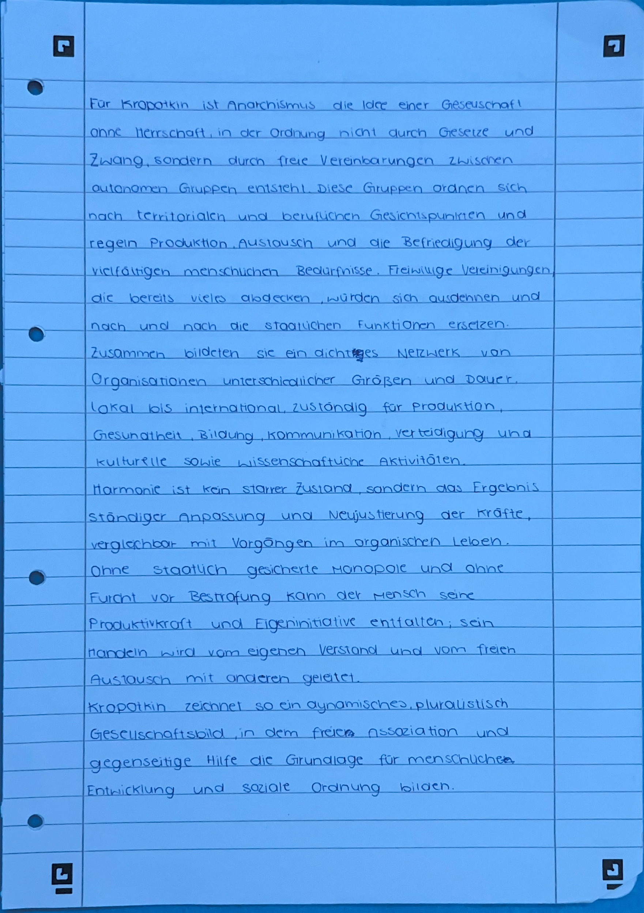
Otfried Höffe kritisiert in seinem Text “Die Utopie des Anarchismus” die Idee des strengen Anarchismus und die Umsetzbarkeit seiner Grundsätze. Der Anarchismus geht davon aus, dass Gesetze, Regierung und Zwang nicht notwendig sind und Menschen auch ohne diese zusammenleben können.
Höffe argumentiert jedoch, dass es dabei einige Probleme gibt. Zum Beispiel kann man ohne einen Staat Regeln und Rechte nicht durchsetzen und Konflikte lösen. Das bedeutet, dass es keine Instanz gibt, die für die Einhaltung von Regeln und Gesetzen sorgt.
Dadurch gibt es die Gefahr, dass sich die Stärkeren durchsetzen und die Schwächeren benachteiligt werden. Höffe bewertet den Anarchismus als Utopie, also als ein ideal gedachtes, aber in der Realität schwer umsetzbares Modell.
Er meint also, dass ein Staat notwendig ist, um Freiheit überhaupt zu gewährleisten. Ohne einen Staat kann man nicht für Recht, Ordnung und Schutz sorgen.
Ein Staat ist also wichtig, um die Freiheit und Gleichheit der Menschen zu schützen
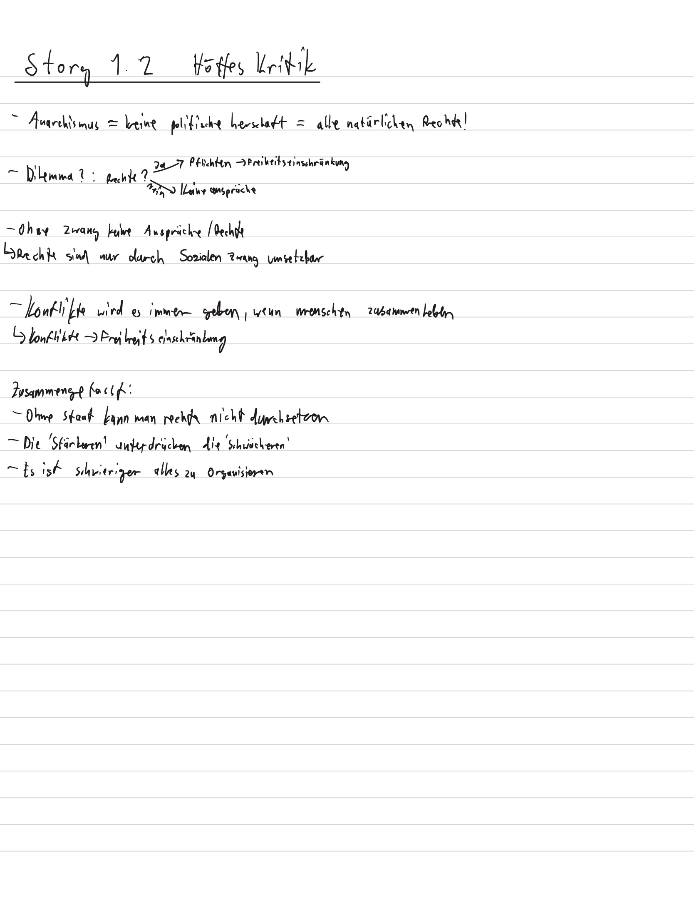
Team Diskussion zur Frage "Brauchen wir einen Staat?"
K: Ich vertrete die Meinung, dass Menschen von Natur aus kooperativ sind und somit keinen staatlichen Zwang brauchen, sondern ohne dessen Einschränkungen seine Fähigkeiten voll zu entwickeln.
H: Ich widerspreche dir und sage, dass es ohne einen organisierenden Staat und ganz ohne Zwang womöglich kein erfolgreiches zusammenleben geben wird.
K: Es mag ja sein, dass es ohne Zwang einer organisierenden Struktur eine schwerer wird eine Harmonie zu erreichen, … nicht das wir in jetzigen Staaten Harmonie hätten, jedoch wird es ein Zusammenleben geben. Ein Zusammenleben, bei dem sich stetig etwas verändert und genau diese ständigen Änderungen und Anpassungen so sage ich wird eine zwanglose Harmonie entstehen.
H: Dass es zu einem erfolgreichen zusammenleben ohne Zwang kommen wird muss erst einmal bewiesen werden. Ich zweifle nämlich stark daran, dass es ohne Kontrollstruktur zu einem harmonischen zusammenleben kommen wird. Nehmen wir mal an es wird einen Konflikt geben, welche unausweichlich sind, solange Menschen etwas wollen, dann würde es zu einer Auseinandersetzung kommen, bei der die Stärkeren gewinnen. Was hält diese Stärkeren dann davon ab die Schwächeren zu unterdrücken und die Harmonie zu zerstören?
K: Das es zu einer Unterdrückung der Stärkeren kommt ist ein vernünftiger Gedanke. Jedoch entstehen Regeln nicht nur durch Gesetze an sondern besonders durch soziale Normen. Und wenn sich also jemand gegen diese Normen verstößt, wie es durch Unterdrückung von Stärkeren wäre, dann wird es Widerstand geben, Widerstand der erst … durch die Abwesenheit eines Staates möglich wird. Der Staat schützt seine Bürger nicht nur, sondern schränkt diese auch ein. Wenn diese Einschränkungen des Staates wegfallen, so können sich die Menschen erst richtig entfalten.
H: Erneut muss ich anzweifeln, ob es wirklich so umsetzbar ist, wie sie prophezieren. Jedoch ist wahrscheinlich genau da der Grund für unsere gespaltene Meinung: In dem Vertrauen an die menschlichen Werte.
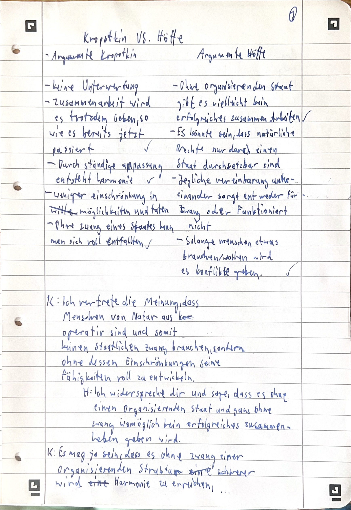
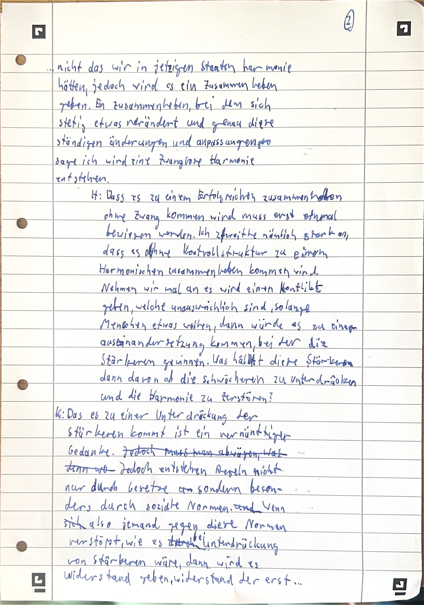
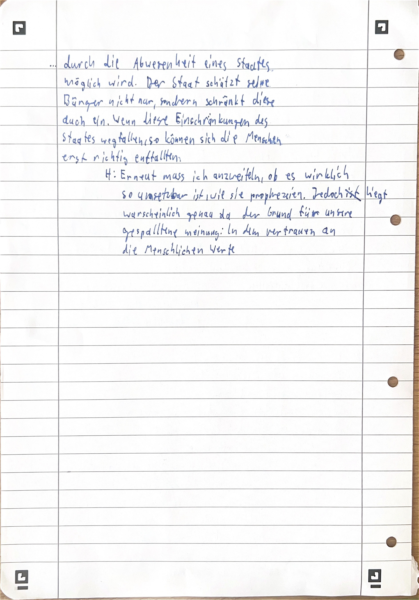
Viel spaß mit den memes
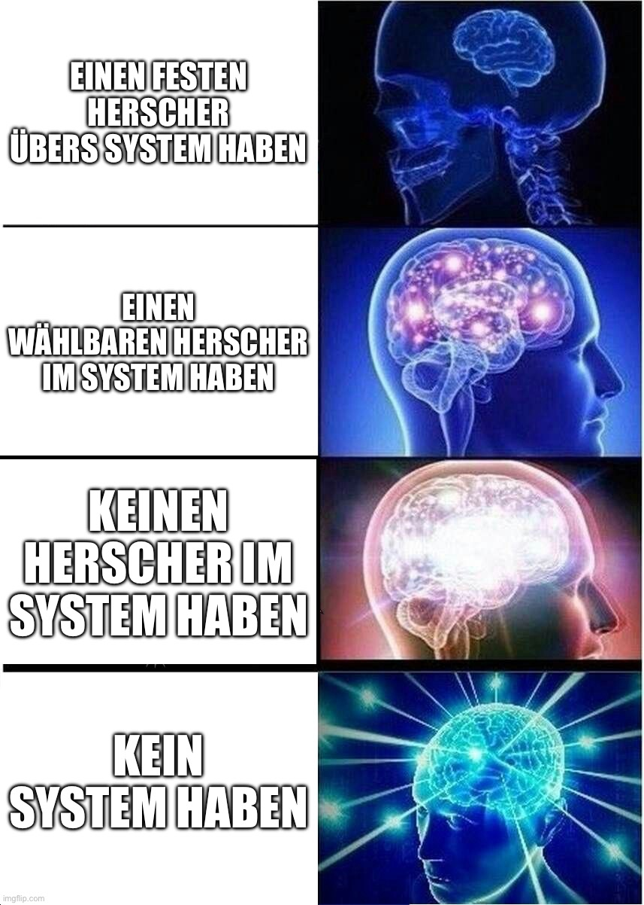
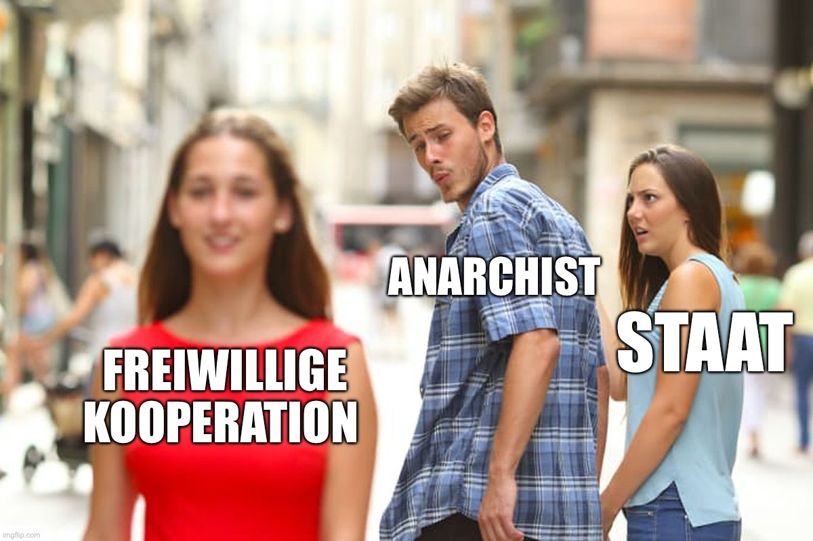
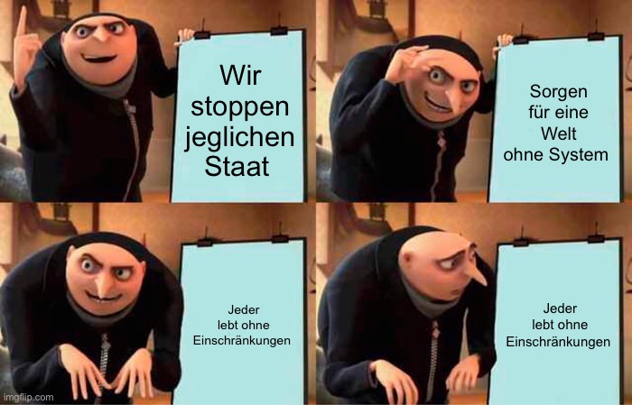
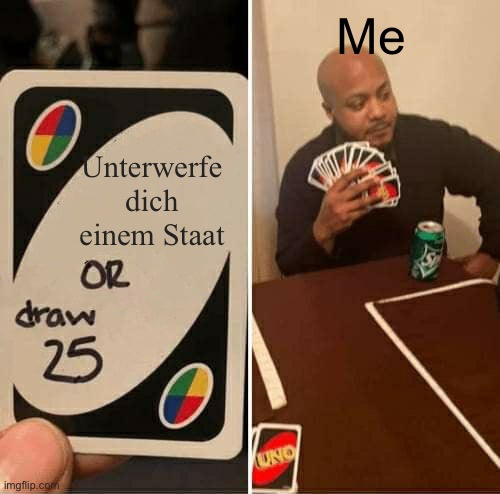
Der Unterschied zwischen negativer und positiver Freiheit geht auf den Philosophen Isaiah Berlin zurück und beschreibt zwei verschiedene Bedeutungen von „frei sein“:
Negative Freiheit bedeutet Freiheit von äußeren Eingriffen.
Eine Person ist frei, wenn niemand sie daran hindert, etwas zu tun.
Beispiel: Du darfst deine Meinung sagen, ohne dass der Staat dich bestraft.
Beispiel: Du kannst entscheiden, welche Kleidung du trägst, ohne Vorschriften.
→ Fokus: Keine Einschränkungen von außen
Positive Freiheit bedeutet Freiheit zu etwas, also die Fähigkeit, das eigene Leben selbstbestimmt zu gestalten.
Hier geht es darum, ob man überhaupt in der Lage ist, seine Ziele umzusetzen.
Beispiel: Du hast Zugang zu Bildung und kannst dadurch deinen Beruf frei wählen.
Beispiel: Du hast genug Geld und Zeit, um deine Pläne zu verwirklichen.
→ Fokus: Eigene Möglichkeiten und Selbstbestimmung
Kurz gesagt:
Negative Freiheit = „Man lässt dich in Ruhe“
Positive Freiheit = „Du kannst dein Leben aktiv gestalten“
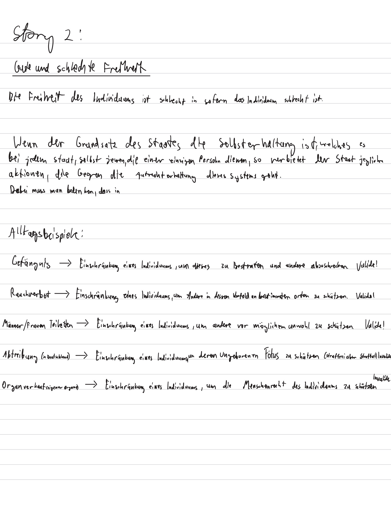
Nach John Stuart Mill kann der Staat die Freiheit einer Person nur dann beschränken, wenn
dadurch verhindert wird, dass andere Personen geschädigt werden. Dieses sogenannte Schadensprinzip besagt, dass Eingriffe nicht gerechtfertigt sind, nur weil ein Verhalten für die betroffene Person selbst unklug oder unmoralisch ist oder weil andere es falsch finden.
Auch wenn etwas dem eigenen Wohl dienen oder jemanden glücklicher machen könnte, darf der Staat keinen Zwang ausüben. Jeder Mensch ist vielmehr Herr über sich selbst, seinen Körper und seinen Geist, solange sein Handeln keine negativen Auswirkungen auf andere hat.
Der Staat darf erst dann eingreifen, sei es durch Gesetze oder Strafen, wenn ein Verhalten tatsächlich oder potenziell anderen Schaden zufügt - selbst durch Unterlassen.
Alltagsbeispiele zur Staatlichen einschränkung:
Gefängnis
→ Einschränkung eines Individuums, um dieses zu bestrafen und andere abschrecken bzw. weitere Vergehen des Individuums zu verhindern. Valide!
Rauchverbot
→ Einschränkung eines Individuums, um andere in seinem Umfeld an bestimmten Orten zu schützen. Valide!
Trennung von Männer und Frauen Toiletten
→ Einschränkung eines Individuums, welches teil einer Gruppe ist, um andere vor möglichem Unwohl zu schützen. Valide!
Abtreibung (in Deutschland)
→ Einschränkung eines Individuums um deren Ungeborenen Fötus zu schützen (straffrei aber Straftat). Invalide!
Organverkauf der eigenen Organe
→ Einschränkung eines Individuums, um die Menschenrechte des Individuums zu schützen. Invalide!
Für das KI generierte Schaubild, haben wir die vorgeschriebene seite in einen bereits mit infos gefütterten chat gegeben zusammen mit dem follgenden prompt: "Erstelle mithilfe des gegebenen Bildes ein Professionelles Schaubild. Überarbeite mögliche Fehler und ergänze noch wichtiges"
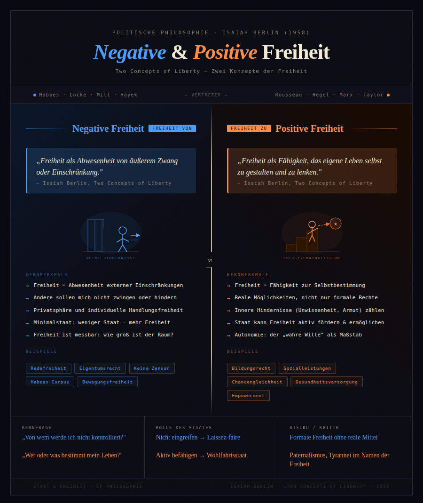
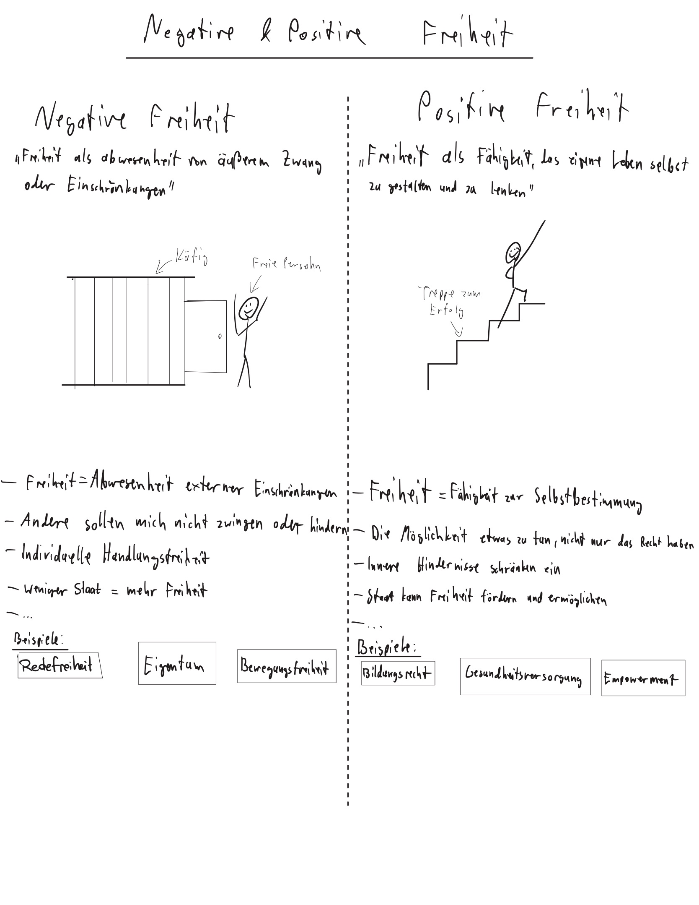
Weder eine Pflicht noch eine Kreative aufgabe, jedoch wollten wir mehr memes machen.
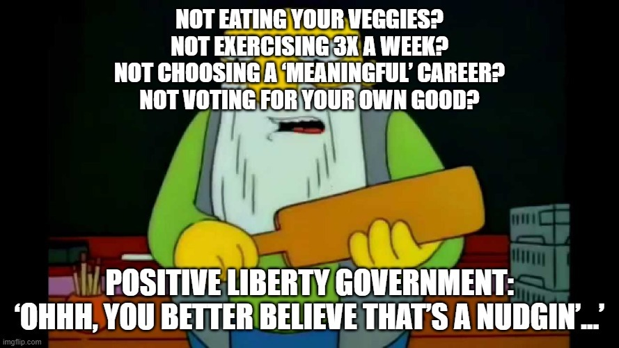
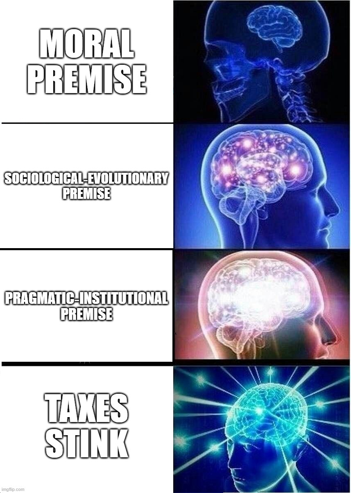
Der Text von Hans Kelsen sagt, dass Recht im Grunde eine Ordnung ist, die auch Zwang ausübt. Gesetze beschreiben dabei nicht einfach nur Fakten, sondern sagen, wie Menschen sich verhalten sollen. Wenn jemand gegen eine solche Regel verstößt, folgt eine Strafe oder ein anderer Nachteil. Wichtig ist, dass der Staat diese Regeln auch gegen den Willen der Leute durchsetzen kann, also Zwang anwendet.
Das richtige Verhalten wird nicht direkt erzwungen. Stattdessen wird bestraft, wenn jemand falsch handelt. Strafen gibt es also nur, wenn jemand gegen die Regeln verstößt. Kelsen meint auch, dass Menschen sich nicht nur deshalb an Gesetze halten, weil sie Angst vor Strafen haben. Oft halten sie sich auch deshalb daran, weil sie es moralisch oder religiös für richtig halten.
Insgesamt zeigt der Text, dass Recht aus festen Regeln besteht. Diese Regeln sind durch mögliche Strafen gesichert und funktionieren deshalb als Zwangsordnung.
Die Weiße Rose war eine studentische Widerstandsgruppe im nationalsozialistischen
Deutschland, gegründet unter anderem von Hans und Sophie Scholl. Ihr Widerstand
war bewusst gewaltlos: Statt zu kämpfen, schrieben und verteilten sie Flugblätter,
in denen sie die Bevölkerung über die Verbrechen und das Unrecht des NS-Regimes
aufklärten. Sie riefen die Menschen dazu auf, passiven Widerstand zu leisten und
moralische Verantwortung zu übernehmen – in einer Zeit, in der die meisten schwiegen.
Ob ihr Handeln legitim war, lässt sich klar bejahen: Moralisch gesehen verlieren
Gesetze ihren Rechtscharakter, wenn sie so extrem ungerecht sind, dass sie
grundlegende Menschenrechte verletzen. Genau das war unter Hitler der Fall.
1943 wurden Sophie und Hans Scholl verhaftet, nach einem kurzen Schauprozess zum
Tode verurteilt und hingerichtet – aber ihre Botschaft wirkt bis heute nach.
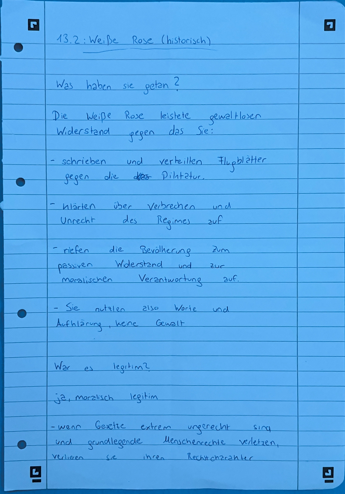
Wann ist „gesetzliches Unrecht“ Widerstand wert?
„Gesetzliches Unrecht“ ist dann Widerstand wert, wenn ein Gesetz ein unerträgliches Maß an Ungerechtigkeit erreicht.
Das ist vor allem der Fall, wenn es bewusst die Gleichheit der Menschen verletzt und grundlegende Gerechtigkeitsprinzipien absichtlich missachtet.
In diesem Fall verliert das Gesetz nach Gustav Radbruch seinen Rechtscharakter. Es ist dann nicht mehr verbindliches Recht, sondern Unrecht.
Widerstand ist daher gerechtfertigt, wenn ein Gesetz so extrem ungerecht ist, dass die Gerechtigkeit Vorrang vor der bloßen Rechtssicherheit haben muss.
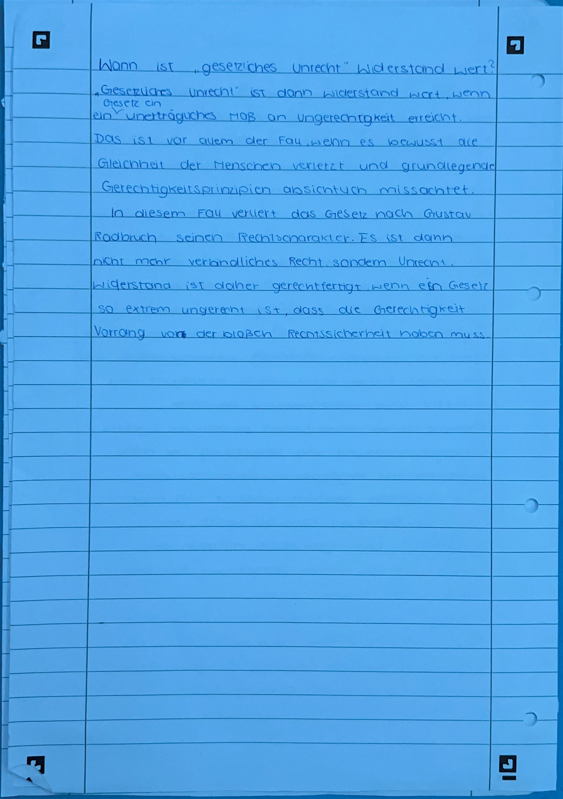
Was ist ziviler Ungehorsam?:
Öffentlicher, meist moralisch begründeter, meist angekündigter und gewaltfreier
Protest, der bewusst einzelne Rechtsnormen verletzt, dessen Akt symbolisch setzt
und die Bereitschaft einschließt, die rechtlichen Folgen zu tragen, dabei ohne die
Rechtsordnung als solche zu verwerfen.
Unterschied zur Revolution:
Ziviler Ungehorsam fordert Revision oder Neubewertung einzelner Normen innerhalb des verfassungsrechtlichen Rahmens; er richtet sich auf symbolische Gesetzesverletzung und Akzeptanz der Rechtsfolgen.
Revolution zielt auf grundlegende, oft gewaltsame Umwälzung oder Ersetzung der bestehenden Ordnung und strebt systematischen Machtwechsel an.
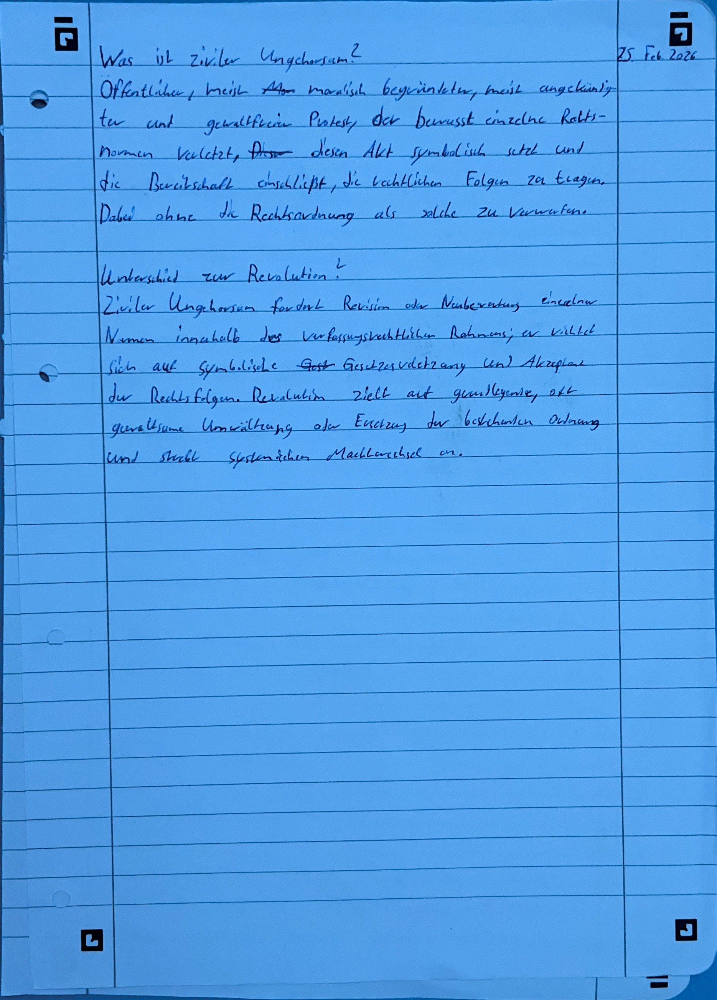
Eine Diskussion zu den aktuellen Problemen der 'ICE-Raids'
Weder eine Pflicht noch eine Kreative aufgabe, jedoch wollten wir mehr memes machen.